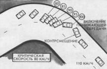

Торможение боковым соскальзыванием
В арсенале высшего мастерства управления автомобилем существует несколько нетрадиционных приемов торможения. Они очень эффективны в критических ситуациях, когда торможение рабочим тормозом или невозможно, например при отказе тормозной системы (обрыве тормозного шланга, механических повреждениях тормозных устройств и др.), или опасно из-за потери устойчивости и управляемости автомобиля. Если автомобиль оказался в повороте на скорости выше критической, то снизить ее не всегда представляется возможным традиционным способом. Самые эффективные приемы торможения – ступенчатый и прерывистый – нельзя применить из-за возможного блокирования колес, а плавный, при котором исключается блокирование, малоэффективен. Возникает “заколдованный круг” или ситуация, когда любой из вариантов оказывается проигрышным, а аварийная ситуация неизбежна. Однако ее можно избежать, используя глубокий критический или ритмический занос как способ торможения. Двигаясь под углом и скользя боком, автомобиль быстро теряет скорость из-за широкого поперечного пятна контакта шины с продольными беговыми дорожками или другими формами грунтозацепов. Для того чтобы тормозить боковым соскальзыванием, нужно перевести автомобиль вуправляемый (!) занос и удерживать его в таком состоянии определенное время, необходимое для снижения скорости. Произвольный занос можно вызвать следующими способами:
– резким дросселированием на дуге поворота с низким коэффициентом сцепления (лед, снег и др.). Двигаясь на дуге поворота, нужно резко “открыть газ”, после возникновения заноса “закрыть газ”, стабилизировав автомобиль поворотом рулевого колеса в сторону заноса;
– контрсмещением и резким дросселированием на входе в поворот. Для того чтобы перейти в боковое скольжение перед первым поворотом налево, нужно вначале выполнить маневр вправо, а затем влево, резко увеличив мощность двигателя. Контрсмещение и поворот, следующие друг за другом, создают вращательный импульс, который затем усиливается благодаря пробуксовке колес. Стабилизация автомобиля осуществляется поворотом рулевого колеса в сторону заноса и уменьшением частоты вращения коленчатого вала двигателя;
– ударным (резким) включением понижающей передачи с пропуском на дуге поворота (см. прием 10).

1. Критический занос, которого водитель всегда остерегается в обычной ситуации, может стать палочкой-выручалочкой для экстренного торможения перед поворотом на скользкой дороге, когда другие способы неэффективны.
2. Начиная поворот, искусственно вызовите скольжение задних колес любым доступным вам способом (резким дросселированием, включением понижающей передачи, контрсмещением или включением-выключением стояночного тормоза).
3. Стабилизируйте автомобиль в критическом заносе скоростным рулением, а затем удерживайте его в таком положении ровно столько времени, сколько необходимо для снижения скорости до безопасной.
4. Опасайтесь бокового упора наружным колесом, который может перевести автомобиль в опрокидывание.
Боковое соскальзывание задних колес можно вызвать резким включением понижающей передачи при закрытом дросселе. Возникает кратковременный эффект блокирования одного из колес, аналогичный случаю с включением стояночного тормоза. Этот эффект вызывает импульс вращения автомобиля в том случае, если автомобиль движется на дуге поворота. Дальнейшая регулировка угла заноса достигается дозированным переменным дросселированием, а стабилизация автомобиля – рулением.
Здесь представлены только три приема, позволяющих перейти в управляемое скольжение, однако их значительно больше. В частности, на переднеприводном автомобиле более эффективно использование приема “газ-тормоз” (см. прием 18), который на дуге поворота может обеспечить блокирование задних колес при сохранении тяги передних. В зависимости от величины и продолжительности тормозного усилия можно регулировать необходимый угол заноса. Однако в отличие от заднеприводного автомобиля длительное удерживание переднепривод-ного автомобиля в боковом скольжении практически невозможно.
Одним из вариантов аварийного торможения скольжением задней оси является использование ритмичного заноса (см. прием 38). Особенно актуален этот прием на спуске при отказе тормозной системы (эта ситуация чаще всего приводит к самым тяжелым последствиям, связанным с гибелью водителей и пассажиров). Для торможения водитель выполняет серию ритмичных маневров, двигаясь по траектории типа “змейка”, сопровождая каждый поворот резким дросселированием, что вызывает поочередно возникающие заносы вправо и влево. Регулируя угол заноса, можно создать тормозное усилие в соответствии с возможностями дорожной ситуации. Сложность выполнения приема связана с высокой скоростью руления, которая может обеспечить безопасность в экстремальных условиях движения. Недостаток скорости, слабая подготовка могут сразу вызвать вращение автомобиля и переход критической ситуации в аварийную.